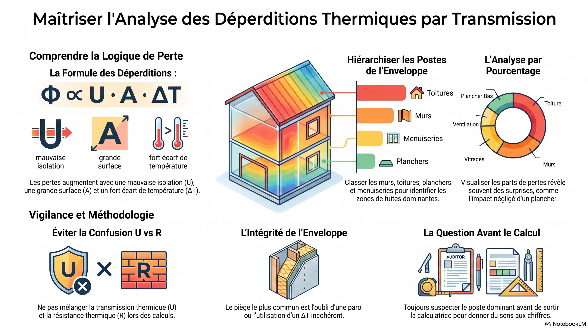
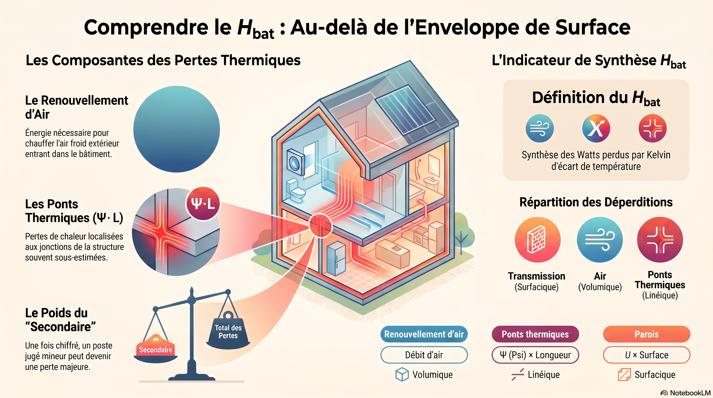
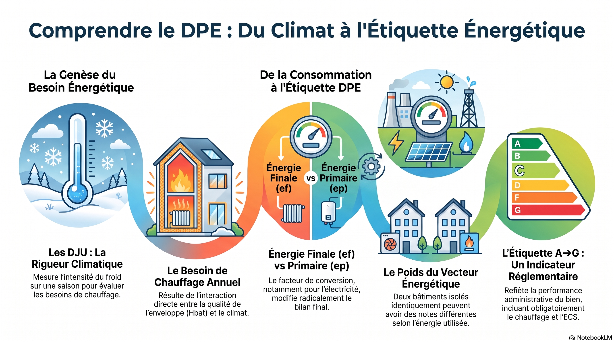
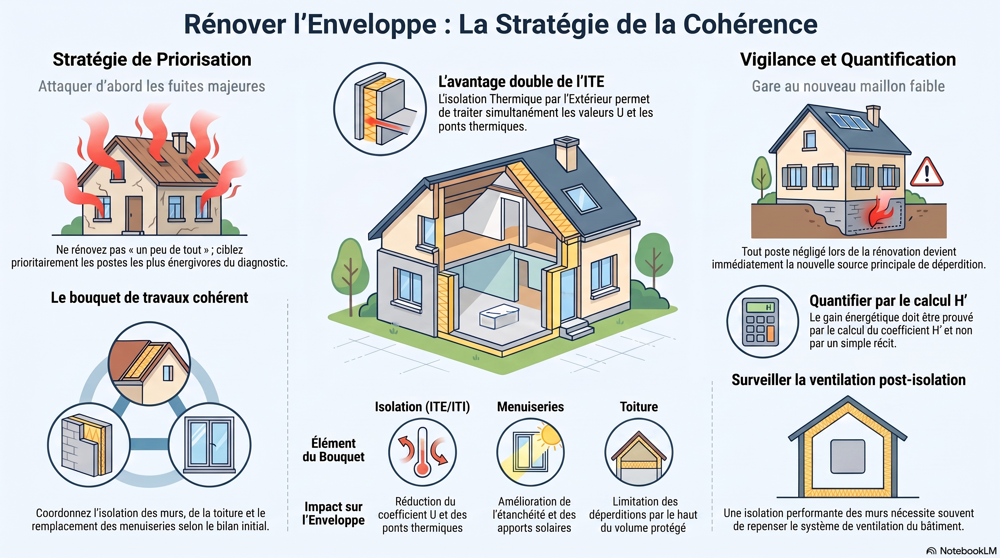
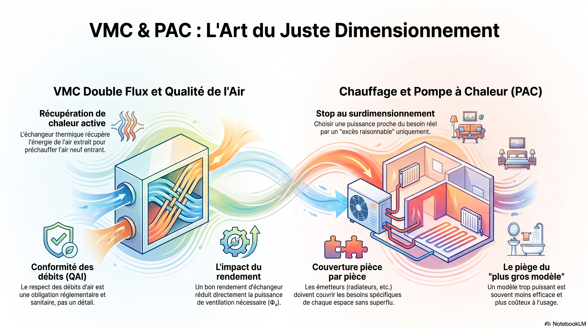
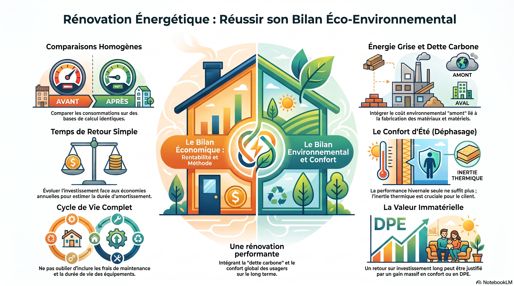

R 1-1
Méthode de travail universitaire
Tableur, références, logique de classeur
Entraînement : Gymnase de Clairmont
IUT Mantes-en-Yvelines · GC-CD
Ouvrez un laboratoire dans le navigateur (ordinateur, tablette ou téléphone). Les infographies rappellent les notions. Ces outils d’entraînement ne remplacent pas le sujet PDF ni les notes de calcul.
Site public pédagogique : pas de sujets notés, pas de corrigés, pas de chiffres des dossiers. Les QCM des labs sont formatifs (mission fictive).
R 1-1
Tableur, références, logique de classeur
Entraînement : Gymnase de Clairmont
R 1-10
Hydraulique AEP, charges, pertes, pompe
Entraînement : Valdeau
R 1-13
Métrologie, incertitudes, conformité
Entraînement : Pierreclaire
R 2-9
Parois, confort, Glaser, ITI / ITE
Entraînement : Halle de Valvert
R 3-10
Transmission, DJU, DPE, rénovation
Entraînement : Pavillon des Aulnes
R 4-8
Été, inertie, BEPOS, aéraulique, acoustique
Entraînement : Maison de santé de Lironde
Cliquez une image pour l’ouvrir en grand.


Cliquez une image pour l’ouvrir en grand.


Cliquez une image pour l’ouvrir en grand.


Cliquez une image pour l’ouvrir en grand.


Cliquez une image pour l’ouvrir en grand.






Cliquez une image pour l’ouvrir en grand.